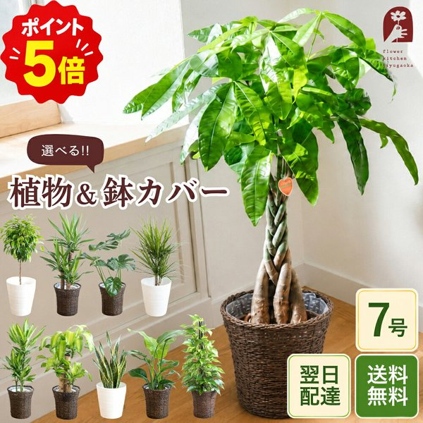
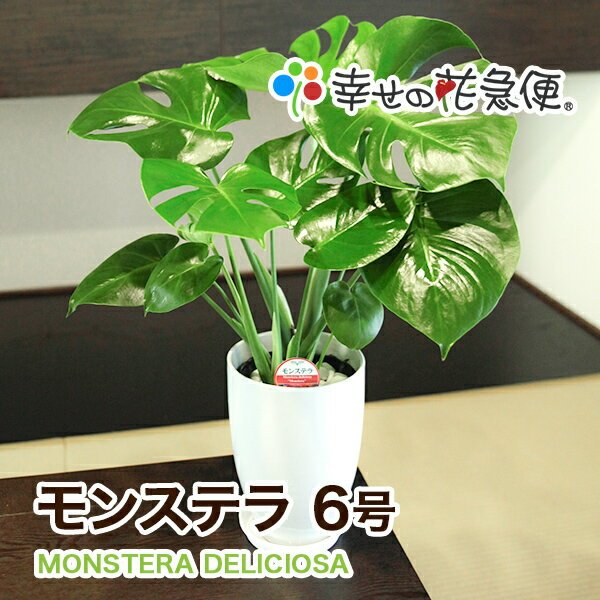
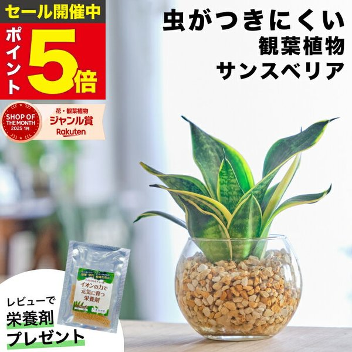
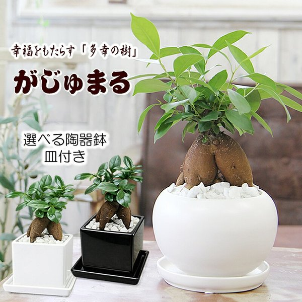
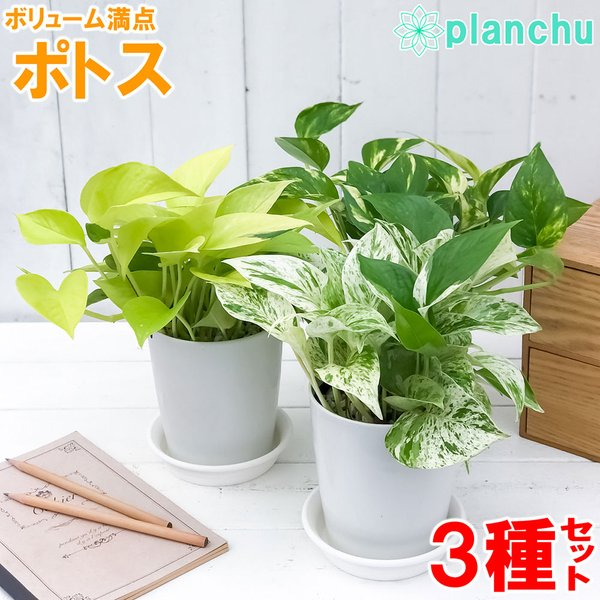
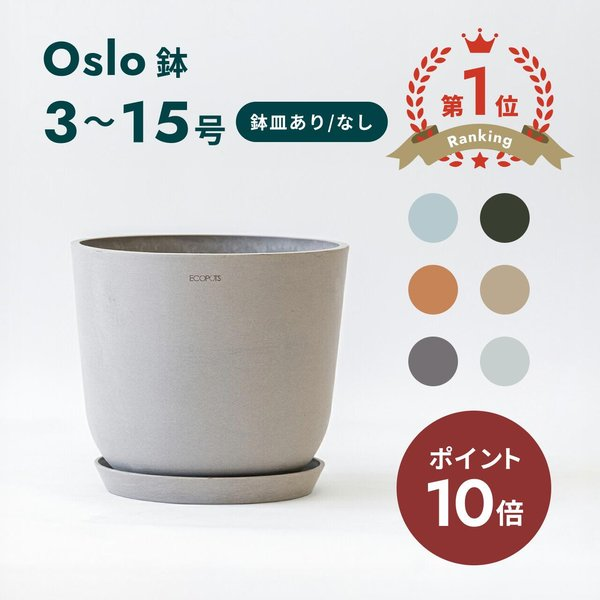
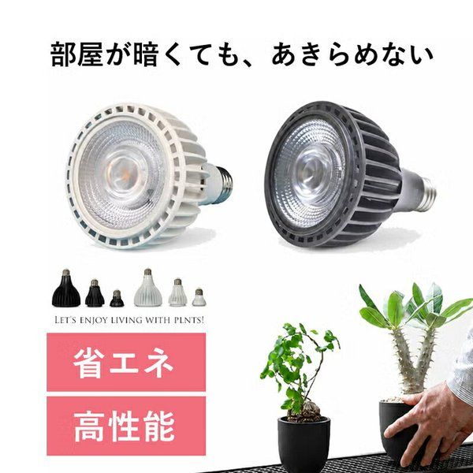
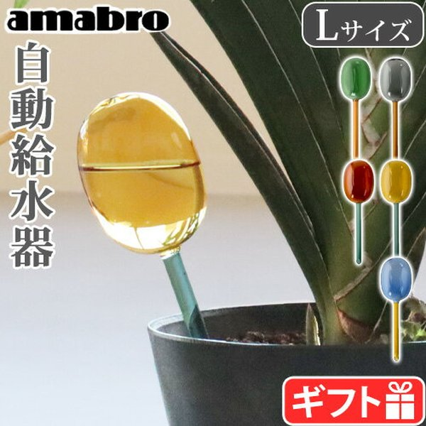
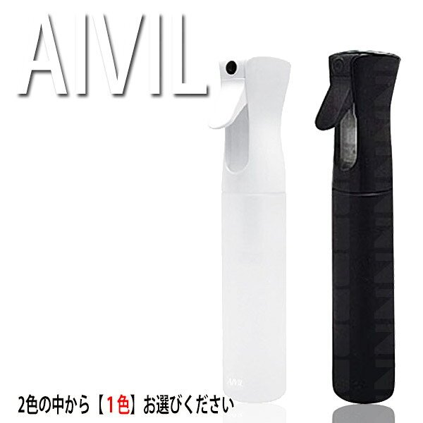
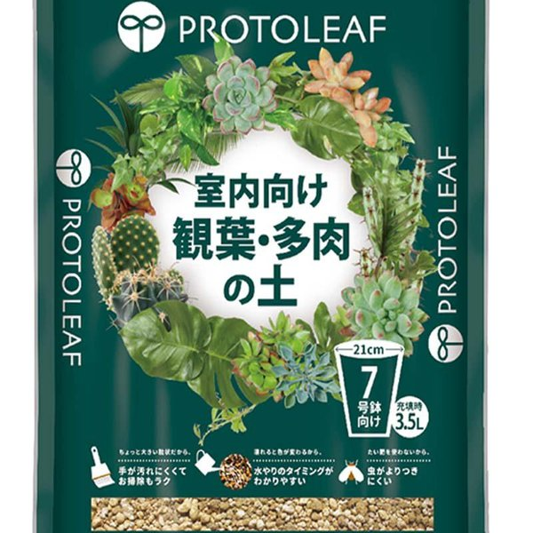

【2026年・観葉植物】パキラ・モンステラ・サンスベリア・ガジュマル・ポトスと、鉢カバー・植物育成ライト・自動給水器・霧吹き・培養土の10選
観葉植物を枯らしてしまう原因は、水のやりすぎか、日当たりの不足のどちらかです。逆に言えば、この2つを道具で整えれば、初心者でも長く育てられます。植物そのものと、育てるための道具をセットで揃えるのが近道です。
選ぶ軸は3つです。「まず置く場所の明るさ」。日が当たる窓際ならパキラやガジュマル、暗い部屋ならサンスベリアやポトスが向きます。「次に水やりの頻度」。仕事で留守がちなら、ハイドロカルチャーか自動給水器を使うと枯れにくくなります。「最後に鉢の重さ」。大きな植物を陶器鉢にすると動かせなくなるので、軽い鉢カバーを組み合わせます。なお、レビュー件数が50件に満たない商品は記事内に実数を明記しています。
本記事では、楽天市場で人気・高評価の観葉植物と育成グッズ10選を、実売価格とレビュー評価つきで写真付き紹介します。
- おすすめ10選 スペック・特徴比較表
- BEST 1｜パキラ 7号鉢 選べる鉢カバー・受け皿付き
- BEST 2｜モンステラ 6号鉢 高さ約60〜75cm
- BEST 3｜サンスベリア ハニーボニー ハイドロカルチャー植え
- BEST 4｜ガジュマル 陶器鉢 受け皿付き
- BEST 5｜ポトス 3種セット 4号鉢（ゴールデン・ライム・マーブルクイーン）
- BEST 6｜ecopots Oslo 3号〜15号 鉢カバー
- BEST 7｜エバーサン 植物育成ライト LED E26口金
- BEST 8｜amabro TWO TONE WATER DISPENSER 自動給水器 Lサイズ
- BEST 9｜AIVIL エアリーミストスプレー 300ml
- BEST 10｜プロトリーフ 室内向け観葉・多肉の土 7号鉢用 3.5L
- 【読者負担0円】買わなくても得する無料サービス
- まとめ：観葉植物・育成グッズ10選の選び方
| 順位 | 商品名 | ブランド | 最大の特徴・おすすめ理由 | 総合評価 |
|---|---|---|---|---|
| BEST 1 | パキラ 7号鉢 選べる鉢カバー・受け皿付き | Flower Kitchen（フラワーキッチン） | 7号鉢で部屋のアクセントになる | 4.52 |
| BEST 2 | モンステラ 6号鉢 高さ約60〜75cm | 幸せの花急便 | 高さ60〜75cmで存在感がある | 4.78 |
| BEST 3 | サンスベリア ハニーボニー ハイドロカルチャー植え | TOKYO PLANTS | 土を使わないので虫が付きにくい | 4.56 |
| BEST 4 | ガジュマル 陶器鉢 受け皿付き | ツカグチ | 陶器鉢と受け皿が付いて届く | 4.86 |
| BEST 5 | ポトス 3種セット 4号鉢（ゴールデン・ライム・マーブルクイーン） | PLANCHU（プランチュ） | 色の違うポトスを3鉢並べられる | 4.90 |
| BEST 6 | ecopots Oslo 3号〜15号 鉢カバー | アンドプランツ（ecopots） | 天然石入りで陶器に近い質感 | 4.70 |
| BEST 7 | エバーサン 植物育成ライト LED E26口金 | ゼンスイ（EVER SUN） | E26口金の照明器具に取り付けられる | 4.79 |
| BEST 8 | amabro TWO TONE WATER DISPENSER 自動給水器 Lサイズ | amabro（アマブロ） | 挿しておくだけで水やりを代われる | 4.66 |
| BEST 9 | AIVIL エアリーミストスプレー 300ml | アイビル（AIVIL） | 細かい霧で葉水に使える | 4.43 |
| BEST 10 | プロトリーフ 室内向け観葉・多肉の土 7号鉢用 3.5L | プロトリーフ（PROTOLEAF） | 7号鉢用の3.5Lで使い切りやすい | 4.76 |
パキラ 7号鉢 選べる鉢カバー・受け皿付き

Flower Kitchenのパキラは、高さのある7号鉢に植えた本物の観葉植物です。かごなどの鉢カバーと受け皿を選べ、育て方のしおりが付きます。SOY2021の花ジャンル大賞を受賞した出品で、最短翌日配達に対応しています。楽天市場での実売価格は約5,700円（2026年11月時点）。
- 7号鉢で部屋のアクセントになる
- 鉢カバーと受け皿を選べる
- 育て方のしおり付きで初めてでも安心
- 生きた植物なので、届く樹形や葉の数は1本ずつ違う
モンステラ 6号鉢 高さ約60〜75cm

幸せの花急便のモンステラは、高さ60〜75cmの6号鉢仕立てです。葉に切れ込みの入るモンステラ・デリシオサで、リビングの隅に置くと部屋の印象が変わります。鉢植えのまま届くので、受け皿を用意すればすぐに飾れます。楽天市場での実売価格は約4,780円（2026年11月時点）。
- 高さ60〜75cmで存在感がある
- 6号鉢仕立てで届く
- 葉の切れ込みがインテリアになる
- 葉の裂け方や本数は個体ごとに違い、写真とまったく同じ株ではない
サンスベリア ハニーボニー ハイドロカルチャー植え

TOKYO PLANTSのサンスベリアは、土を使わずゼオライトなどの粒に植えたハイドロカルチャー仕立てです。虫が付きにくく、室内の卓上に置けます。ハニーボニーは葉が短く丸まる品種で、乾燥に強く水やりの回数が少なくて済みます。楽天市場での実売価格は約3,756円（2026年11月時点）。
- 土を使わないので虫が付きにくい
- 卓上に置けるサイズ
- 乾燥に強く水やりが少なくて済む
- ハイドロカルチャーは水の量与えすぎると根が傷む
ガジュマル 陶器鉢 受け皿付き

ツカグチのガジュマルは、太い幹のガジュマルの木を陶器鉢に植えた商品です。選べる陶器鉢に受け皿が付き、送料無料で届きます。幹が膨らんだ姿が特徴で、デスクや玄関の靴箱の上に置いても収まります。楽天市場での実売価格は約3,980円（2026年11月時点）。
- 陶器鉢と受け皿が付いて届く
- 幹の太いガジュマルを選べる
- 送料無料
- 鉢の色は選べても、樹形や幹の形は選べない
ポトス 3種セット 4号鉢（ゴールデン・ライム・マーブルクイーン）

PLANCHUのポトス3種セットは、葉の色が違うポトスを3鉢まとめた商品です。ゴールデン、ライム、マーブルクイーンをそれぞれ4号鉢に植え、受け皿と育て方の説明書が付きます。つるが伸びるので、棚の上から垂らして飾れます。楽天市場での実売価格は約3,980円（2026年11月時点）。
- 色の違うポトスを3鉢並べられる
- 受け皿と育て方説明書付き
- つるを垂らして飾れる
- レビュー69件で、つるが伸びると支柱や吊り鉢が必要になる
ecopots Oslo 3号〜15号 鉢カバー

アンドプランツが扱うecopotsのOsloは、プラスチックに天然石を混ぜて作った鉢です。3号から15号までサイズを選べ、観葉植物の鉢をそのまま入れるカバーとして使えます。陶器より軽いので、大きな植物の植え替えでも持ち運びが楽です。楽天市場での実売価格は約1,730円（2026年11月時点）。
- 天然石入りで陶器に近い質感
- 3号〜15号から選べる
- 軽いので植え替えが楽
- プラスチック製なので、陶器の質感とは少し違う
エバーサン 植物育成ライト LED E26口金

ゼンスイのエバーサンは、E26口金のLED植物育成ライトです。昼白色と暖色の光を切り替えられ、日当たりの足りない部屋でも観葉植物に光を当てられます。照明器具のソケットに取り付けて使うタイプで、観葉植物のほか塊根植物の栽培にも使えます。楽天市場での実売価格は約2,750円（2026年11月時点）。
- E26口金の照明器具に取り付けられる
- 昼白色と暖色を切り替えられる
- 日照不足の補光に使える
- レビュー72件で、ソケットやスタンドは別に用意する
amabro TWO TONE WATER DISPENSER 自動給水器 Lサイズ

amabroのツートーン ウォーターディスペンサーは、ガラス容器に水を入れて鉢に挿す自動給水器です。Lサイズで、留守がちな人の水やりを代替できます。2色のガラスが重なった見た目で、鉢の横に置いても飾りとして馴染みます。楽天市場での実売価格は約2,200円（2026年11月時点）。
- 挿しておくだけで水やりを代われる
- ガラス製でインテリアになじむ
- Lサイズで水の持ちがよい
- 水の減り具合は植物と室温で変わるので、ときどき確認する
AIVIL エアリーミストスプレー 300ml

アイビルのエアリーミストスプレーは、細かい霧が出るスプレーボトルです。観葉植物の葉水に使え、葉のほこりを落とすのにも向きます。遮光性のある容器で、日が当たる場所に置いても水が傷みにくい作りです。楽天市場での実売価格は約1,038円（2026年11月時点）。
- 細かい霧で葉水に使える
- 遮光性の容器
- 白と黒の2色から選べる
- 300mlなので、葉の多い大きな株には何度か補充が必要
プロトリーフ 室内向け観葉・多肉の土 7号鉢用 3.5L

プロトリーフの室内向け培養土は、観葉植物と多肉植物の植え替え用に配合された土です。7号鉢用の3.5Lで、元肥入り。粒状で軽く、たい肥を使っていないため虫が付きにくいのが特徴です。植え替えのときに鉢のサイズに合わせて使えます。楽天市場での実売価格は約1,015円（2026年11月時点）。
- 7号鉢用の3.5Lで使い切りやすい
- 元肥入りで植え替え後すぐ育つ
- たい肥不使用で虫が付きにくい
- レビュー29件と少なく、大きい鉢には容量が足りない
この記事の商品を買う前に、まずは無料で得する選択肢をチェック。どれも登録・利用は0円で、無料期間中に解約すれば料金はかかりません。読みたい雑誌がある人、ポイントを貯めたい人、アンケートなら気軽という人、それぞれに合うものを選べます。
初回31日無料・無料期間中に解約すれば0円 → 楽天ポイントモール｜登録無料で毎日ポイ活
買い物なしでもポイントが貯まる無料サービス → 楽天インサイト｜アンケートに答えてポイント
登録無料・すきま時間のアンケートで貯まる → 楽天カード｜年会費永年無料
新規発行・年会費ずっと0円 →
4つのサービスの違いと使い分けは「出費0円で得する！買わずにポイントが貯まる無料サービス厳選4選」でまとめています。
💡 まとめ：観葉植物・育成グッズ10選の選び方
観葉植物は、置く場所の明るさで選ぶのがいちばん失敗が少なくなります。日が当たる部屋なら、Flower Kitchenのパキラ7号鉢、幸せの花急便のモンステラ6号鉢、ツカグチのガジュマル陶器鉢。暗めの部屋やデスクなら、TOKYO PLANTSのサンスベリアのハイドロカルチャーと、PLANCHUのポトス3種セット。大きくなった植物には、軽いアンドプランツのecopots Osloを鉢カバーとして使います。日当たりが足りない部屋では、ゼンスイのエバーサンLEDで補光し、留守がちな人はamabroの自動給水器を挿しておくと安心です。葉水と葉のほこり落としにはアイビルの霧吹き、植え替えにはプロトリーフの室内向け培養土。植物を1鉢買うときに、この中から育てる道具を2つだけ足すと、その後の手入れがぐっと楽になります。
楽天市場では「5と0のつく日」や「お買い物マラソン」などのキャンペーンに合わせて購入すると、ポイント還元が最大化してお得に手に入ります。ぜひチェックしてみてくださいね。